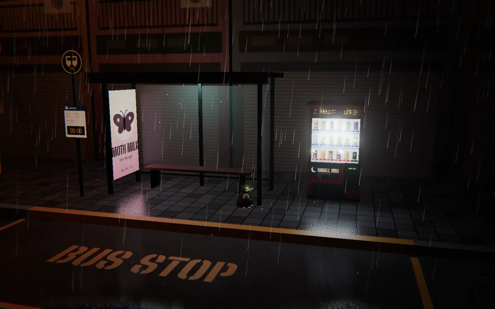

Slices of my mind
slsc is everything I might come up with, one frame at a time: scenes, toys, pictures, words, sounds, finished or not. This strip exists so I can nurture the artist inside me.
-

3 A.M. Vending Machine
A bus stop in the rain. A machine that never closes. One regular, most nights.
end of strip, for now.